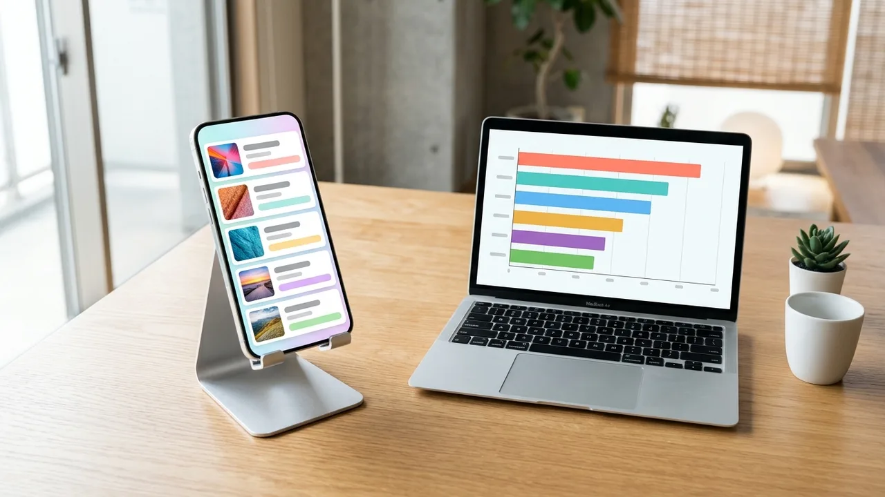
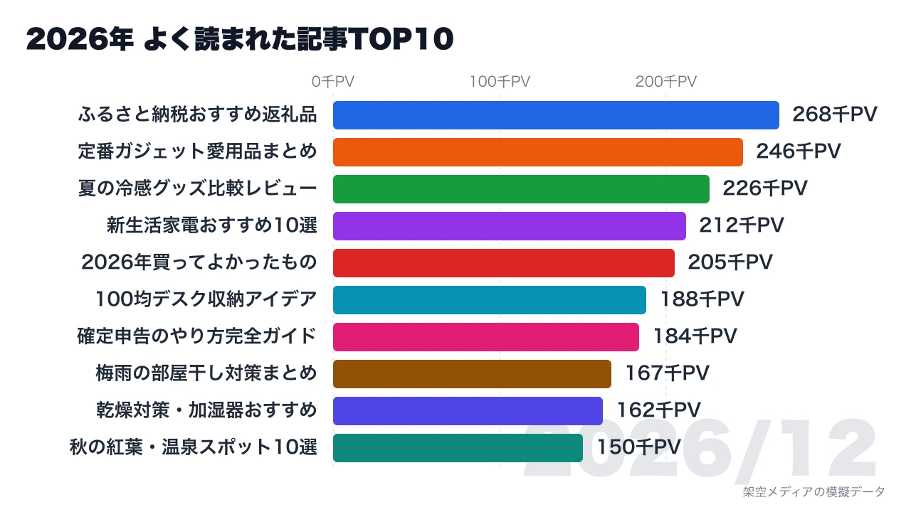
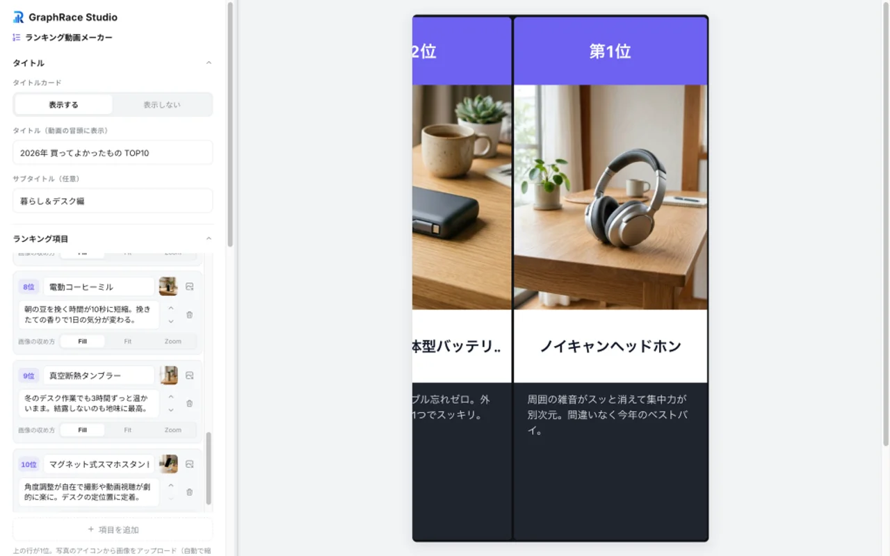
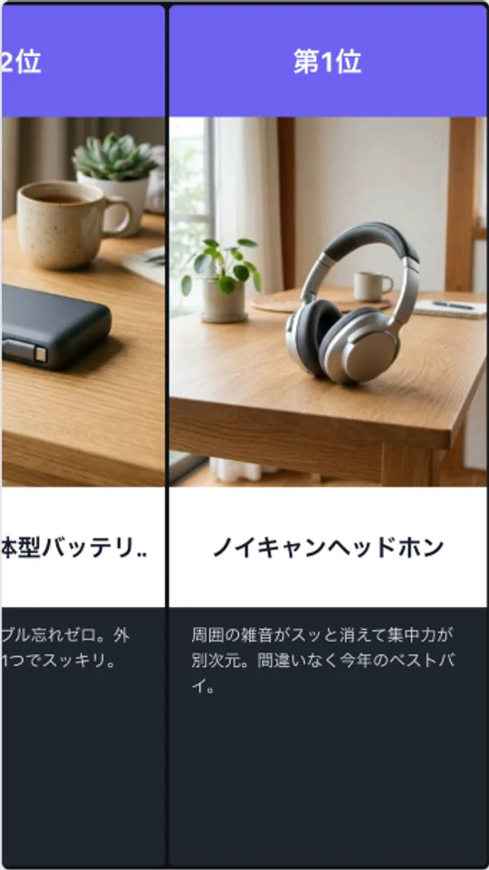

2026年の振り返りランキング動画の作り方｜YouTube・SNS年末企画を無料で簡単に作成
12月に入ると、YouTubeやTikTok、Instagramリール、Xで一気に再生されやすくなるのが「2026年 買ってよかったものTOP10」「今年の○○ランキング」といった年末の振り返り企画です。
ただ、いざ動画にしようとすると「編集ソフトで10個分のカードやテロップを並べるのが大変」「1月〜12月の推移をグラフで動かす方法が分からない」と手が止まりがちです。実は、ベースのランキング映像さえブラウザ上の無料ツールで作ってしまえば、撮影や複雑な編集なしでも30分ほどで年末企画の1本が完成します。
この記事では、年末の振り返りランキング動画で使える2つの表現タイプの選び方、ジャンル別の企画ネタ15選、具体的な例題に沿った作成手順、そして12月の短期決戦で再生数を伸ばすコツまでをまとめました。
記事内で紹介している「ランキング動画メーカー」「バーチャートレース作成ツール」「格付けダービー」は、当サイト（GraphRace Studio）が開発・運営している無料ブラウザツールです。会員登録やアプリのインストール不要ですぐに試せます。
2026年の振り返りランキング動画は2つの表現タイプから選ぶ

年末の振り返り動画というと、写真をスライドショーで流す思い出ムービーを思い浮かべる人も多いですが、YouTubeやSNSで新規視聴者にも見てもらいやすいのは「順位」や「変化」がひと目で伝わるランキング形式です。
まずは自分のネタが「写真＋一言コメントで順番に紹介したいもの」なのか、「1月〜12月の数値の変化や逆転劇を見せたいもの」なのかで、次の2タイプから選びましょう。
タイプ1：カードが流れるカウントダウン型（ランキング動画メーカー）
第10位から第1位へ、写真・タイトル・一言コメントが入ったカードが横へ流れていく定番のランキング形式です。「今年買ってよかったものTOP10」「2026年ベスト映画TOP10」のように、数値よりも写真と感想で魅せたいテーマに向いています。
タイプ2：1月〜12月の推移が動くバーチャートレース型（バーチャートレース）
1月から12月にかけて棒グラフが伸び縮みし、順位がリアルタイムに入れ替わっていくデータ動画です。「2026年 よく読まれた記事TOP10」「月別の推し活・趣味への出費推移」など、1年間の波や大逆転のドラマを見せたいテーマで強いインパクトが出ます。

| 比較項目 | カードが流れる型 （ランキング動画メーカー） |
動く棒グラフ型 （バーチャートレース） |
|---|---|---|
| 向いているネタ | 買ってよかったものTOP10、ベストグルメ、おすすめ本・映画・アニメ | 月別の再生数・売上推移、人気記事や商品の勢力図、今年のトレンド変化 |
| 必要な素材 | 順位・名前・写真（スマホ写真OK）・一言コメント | 項目名と1月〜12月の数値データ（CSVまたは表入力） |
| 目安の作成時間 | 約10〜20分（写真が揃っていれば5分〜） | 約15〜30分（AIデータ生成を使えばさらに短縮） |
| 相性の良い媒体 | YouTube通常・ショート、TikTok、Instagramリール、X | YouTube通常・ショート、X、企業SNS、ブログ埋め込み |
横にスクロールできます
視聴者と一緒に1位を予想しながら振り返りたいライブ配信や、会社の忘年会で社内ランキングを発表する場面では、馬が競い合って順位が決まる格付けダービー（競馬風ランキング）を使うと一気にイベント感が出ます。忘年会向けの企画は忘年会・新年会で盛り上がるゲーム・余興20選も参考にしてください。
伸びる「2026年 今年の○○ランキング」企画ネタ15選
12月の視聴者は「自分が今年見逃したものはないか」「他の人は何を買って・何にハマったのか」を無意識に探しています。専門的なデータでなくても、あなたのジャンルに沿った切り口なら十分に伸びます。
買い物・レビュー系（保存・購入リンクと相性◎）
- 1. 2026年 買ってよかったものTOP10（ガジェット、日用品、キッチン家電、コスメなどジャンルを絞るほど伸びやすい）
- 2. 正直買って後悔したワーストバイTOP10（本音レビューはコメント欄が最も盛り上がる定番企画）
- 3. 3,000円以下で買えたコスパ最強アイテムTOP10（価格帯を縛ると視聴者が真似しやすく保存が増える）
- 4. 2026年にリピート買いした日用品・食品TOP10（コンビニ・無印・100均・カルディなど店舗縛りも強い）
趣味・エンタメ・推し活系（共感・議論が生まれやすい）
- 5. 2026年に観た映画・アニメ・ドラマおすすめTOP10（「年末年始に一気見してほしい作品」と絡めると12月後半に刺さる）
- 6. 今年読んで人生観が変わった本・漫画TOP10（表紙イメージや一言メモを添えると保存されやすい）
- 7. 2026年 食べて感動したベストグルメ・カフェTOP10（エリアを絞ると検索流入も狙える）
- 8. 今年の推し活ハイライト・神回TOP10（ライブ参戦、名シーン、お気に入りグッズの振り返り）
クリエイター・チャンネル振り返り系（ファンとの距離が縮まる）
- 9. 2026年 自分のチャンネルで最も伸びた動画TOP10（総集編として新規視聴者への名刺代わりになる）
- 10. 時間をかけたのに伸びなかった不遇動画・ボツ企画TOP10（自虐と裏話は既存ファンの満足度が高い）
- 11. 2026年 企画ジャンル別の月間累計再生数推移（1月〜12月）（バーチャートレースで1年の成長を可視化）
- 12. 今年の目標達成度ランキングTOP10（年初の宣言を点数化して振り返る企画）
企業SNS・ブログ・コミュニティ系（広報・年末報告に）
- 13. 2026年 人気商品・よく読まれた記事TOP10（自社サイトのアクセス数や販売実績の年間まとめ）
- 14. 2026年 業界・社内の重大ニュースTOP10（BtoBアカウントや社内報・納会のオープニング映像に）
- 15. カテゴリ別・月間売上や問い合わせ数の年間推移（バーチャートレースで1年間のトレンド変化を一気に見せる）
媒体別のちょうどいい順位の数と尺の目安
| 投稿先 | おすすめの比率 | 順位の数・尺の目安 | 見せ方のポイント |
|---|---|---|---|
| YouTube（通常動画） | 16:9（横型） | TOP10 / 5〜12分 | ベース映像を流しながら各順位で理由や体験談をじっくり解説 |
| YouTubeショート / TikTok / リール | 9:16（縦型） | TOP10（早送りテンポ）または抜粋TOP3〜5 / 30〜60秒 | 1項目3〜5秒でテンポよく回し、詳細はコメント欄や長尺動画へ誘導 |
| X（旧Twitter） | 16:9 または 9:16 | TOP10のダイジェスト / 20〜45秒 | 無音再生されることが多いため、文字の大きさ・コントラストを最優先 |
横にスクロールできます
【作り方①】ランキング動画メーカーで「2026年買ってよかったものTOP10」を作る

まずは最もニーズが高い「2026年 買ってよかったものTOP10」を例に、ランキング動画メーカーでの作成手順を紹介します。PCでもスマホのブラウザでも同じ流れで作れます。
ステップ1：10位〜1位の項目と写真・一言コメントを用意する
最初にメモ帳などで10個分のリストを作っておくと入力が一瞬で終わります。コメントは長文にすると読まれにくいため、25〜35文字の「ひとこと結論」に絞るのがコツです。
- 第10位：マグネット式スマホスタンド（角度調整が自在で撮影や動画視聴が劇的に楽に。デスクの定位置に定着。）
- 第9位：真空断熱タンブラー（冬のデスク作業でも3時間ずっと温かいまま。結露しないのも地味に最高。）
- ……（中略：第8位〜第3位）……
- 第2位：ケーブル一体型バッテリー（10000mAhでケーブル忘れゼロ。外出時の荷物がこれ1つでスッキリ。）
- 第1位：ノイキャンヘッドホン（周囲の雑音がスッと消えて集中力が別次元。間違いなく今年のベストバイ。）
ステップ2：ツールを開いて画面比率を選び、データを入力する
ランキング動画メーカーを開き、まず投稿先に合わせた画面比率（YouTube通常動画なら16:9、ショート・TikTok・リールなら9:16）を選びます。タイトルカードを「表示する」にして「2026年 買ってよかったもの TOP10」と入力し、あとは10位から1位まで順位・アイテム名・写真・一言コメントを順番に入れていくだけです。
ステップ3：流れるスピードと配色を調整してプレビューする
入力が終わったら再生ボタンでプレビューします。TOP10をショート動画（30〜40秒前後）に収めたい場合は速度を4あたりに、YouTube通常動画でナレーションを当てたい場合はゆったりめに調整してください。

ステップ4：動画を書き出し、必要に応じてBGM・音声を足す
納得できたら「動画を書き出す（MP4 / WebM）」から保存します。下は実際にツールから書き出した9:16（縦型・タイトルカードあり・約31秒）の完成サンプルです。このままYouTubeショートやTikTok、Instagramリールに投稿しても成立しますし、編集アプリでBGMやアフレコを乗せるとさらに視聴維持率が高まります。スマホだけで仕上げる細かい手順はYouTubeでよく見るランキング動画の作り方｜スマホでも無料！でも詳しく解説しています。
会員登録・インストール不要。順位・写真・コメントを入れるだけで、YouTube（16:9）とショート（9:16）の両対応で動画を書き出せます。
【作り方②】バーチャートレースで「2026年 よく読まれた記事TOP10」の推移を作る
次に、1年間の変化と逆転劇を見せられるバーチャートレース作成ツールの作り方です。ここでは架空の暮らし・ガジェット系メディアを例にした模擬題材「2026年 よく読まれた記事TOP10（1月〜12月の累計PV推移 / 単位：千PV）」を使って説明します。
自分のブログやnoteの月別PV、YouTubeの動画別再生数、ECサイトの人気商品ランキングなどにもそのまま応用できます。
ステップ1：1月〜12月の時系列データ（CSV形式テキスト）を用意する
バーチャートレース作成ツールでは、「項目名,画像URL,2026/01,2026/02,…」の順で1月〜12月の数値を並べたデータを使います（画像URLは空欄のままでOKです）。
春は確定申告や新生活家電が独走し、夏に冷感グッズが急上昇、秋〜冬にかけてふるさと納税と「2026年買ってよかったもの」が一気に追い上げる——という流れの模擬データを用意しました。下のテキストはそのままコピーして、ツール内の「AIでデータを作る」画面から貼り付けて試せます。
タイトル: 2026年 よく読まれた記事TOP10
出典: 架空メディアの模擬データ
単位: 千PV
項目名,画像URL,2026/01,2026/02,2026/03,2026/04,2026/05,2026/06,2026/07,2026/08,2026/09,2026/10,2026/11,2026/12
ふるさと納税おすすめ返礼品,,8,14,20,26,33,42,54,70,98,136,192,268
定番ガジェット愛用品まとめ,,22,43,64,85,106,126,146,166,185,204,224,246
夏の冷感グッズ比較レビュー,,2,4,7,14,34,78,142,198,216,221,224,226
新生活家電おすすめ10選,,14,46,108,164,180,187,192,196,200,204,208,212
2026年買ってよかったもの,,0,0,0,0,0,12,24,38,54,78,132,205
100均デスク収納アイデア,,16,31,46,61,76,92,108,124,140,156,172,188
確定申告のやり方完全ガイド,,42,108,166,171,173,174,175,176,177,178,180,184
梅雨の部屋干し対策まとめ,,6,11,17,28,64,124,148,154,158,161,164,167
乾燥対策・加湿器おすすめ,,24,38,44,46,47,48,49,50,54,76,118,162
秋の紅葉・温泉スポット10選,,3,5,7,9,11,13,16,22,48,96,142,150公開統計や一般トレンドを題材にしたい場合は、バーチャートレース画面の「データ」タブにある「AIでデータを作る」ボタンから、ChatGPTやGemini用の依頼文をコピーできます。返ってきたデータをそのまま貼り付けるだけで読み込めるため大幅な時短になります。
ステップ2：「AIでデータを作る」画面に貼り付けて読み込む
バーチャートレース作成ツール（データ貼り付け画面）を開き、「データ」タブの「AIでデータを作る」内にある「3. AIの返事を貼り付けて読み込む」欄へ上の模擬データをそのまま貼り付けて「読み込む」を押します。タイトル・出典・単位と1月〜12月のデータが一括で反映され、すぐにプレビュー再生できます（手元のExcelやCSVファイルを読み込む場合は「データ (CSV / Excel)」から選択してください）。
ステップ3：12月のフィニッシュが映えるようにデザインを調整する
年末振り返り動画として見やすくするため、次の3点だけ調整しておくと完成度が一段上がります。
- タイトルに年号と単位を入れる：「2026年 よく読まれた記事TOP10（累計PV / 千回）」のように冒頭で意味が伝わるようにする
- 表示本数をTOP10に設定する：10本すべてを画面内に収めると、秋から年末にかけての追い上げまでしっかり追える
- 再生速度を20〜35秒前後に収める：1ヶ月あたり2〜3秒のペースにすると、順位が入れ替わる瞬間を視聴者が目で追いやすく、12月の最終結果にも余韻が残る
ステップ4：動画を書き出して投稿用に仕上げる
調整が終わったら録画・書き出し機能で動画ファイルとして保存します。横型（16:9）でYouTubeの年末総括動画やブログのまとめ記事に埋め込んでも映えますし、縦型（9:16）で書き出して「夏は冷感グッズが1位だったけど、年末にふるさと納税が大逆転！」といった短いテロップとBGMを乗せれば、そのままショート動画の1本になります。詳しい設定や表現テクニックはバーチャートレースの作り方完全ガイドもあわせてご覧ください。
上のデータをコピーして「AIでデータを作る」画面に貼り付けるだけで、1月〜12月の順位が入れ替わる動く棒グラフをブラウザ上ですぐにプレビューできます。
12月のYouTube・SNSで振り返りランキング動画を伸ばす5つのコツ
年末の振り返り企画は需要が大きいぶん、12月後半になると似たテーマの動画が一気に増えます。同じ内容でも、次の5つを押さえておくだけで再生数とコメント数に大きな差がつきます。
1. 投稿の狙い目は「12月第2週〜28日」
大晦日や元旦はテレビの特番や大手クリエイターの大型配信に視聴時間が集中し、通常のランキング動画はタイムラインで埋もれやすくなります。最も見られやすいのは12月10日〜28日頃です。もし間に合わなかった場合は、1月1日〜3日の「年末年始の空き時間」に合わせてショート動画で総まとめ版を出すと再生されやすくなります。
2. 冒頭2秒とサムネイルで「2026年」「TOP10」「意外性」を伝える
「皆さんこんにちは、今年ももう終わりですね」という挨拶から入ると、ショート動画ではほぼ確実にスワイプされます。開始0〜2秒で「2026年 買ってよかったものTOP10。1位は正直これ一択でした」のようにテーマと期待感を言い切り、サムネイルにも「2026」「TOP10」の数字を大きく配置しましょう。
3. コメント欄が動く「問いかけ」を最後に入れる
ランキング動画は視聴者が自分の意見を持ちやすいため、コメント欄が活性化しやすいジャンルです。1位を発表したあとに「あなたの2026年の1位は何でしたか？コメントで教えてください」「○○が入っていないのは意外だった？」と一言添えるだけで、アルゴリズム評価につながるエンゲージメントが大きく伸びます。
4. 1回のデータ作成で「横型（16:9）」と「縦型（9:16）」を両方書き出す
ランキング動画メーカーもバーチャートレースも、入力したデータを保持したまま画面比率を切り替えられます。YouTube通常動画向けに16:9で書き出したら、そのまま9:16に切り替えてショート・TikTok・Instagramリール用も同時に書き出すのが最もコスパの良い運用です。
5. BGM・商品写真の著作権トラブルを避ける
「買ってよかったものTOP10」で公式サイトやECサイトの商品画像を無断転載したり、市販曲をそのままBGMに入れたりすると、著作権侵害の申し立てや収益化制限の対象になります。写真は自分で撮影した実物写真を使い、BGMはYouTubeオーディオライブラリなどの著作権フリー音源、またはTikTok・リール公式のアプリ内音源を使うのが安全です。著作権や無料素材の選び方は順位発表動画の作り方｜著作権・利用規約でやりがちな失敗も参考にしてください。
よくある質問（FAQ）
振り返りランキング動画は12月のいつ投稿するのがベストですか？
最も視聴されやすいのは12月第2週〜12月28日頃です。大晦日や元旦は特番や大型配信に視聴が集中して埋もれやすいため、12月中旬〜下旬に本編を出し、年明けの三が日にショート動画でダイジェスト版を出すのがおすすめです。
スマホだけでも作れますか？アプリのインストールは必要ですか？
作れます。ランキング動画メーカーもバーチャートレース作成ツールもブラウザ上で動くため、アプリのインストールや会員登録は不要です。スマホのアルバムにある写真をそのまま選んで動画として保存できます。
1位から発表するのと、10位からカウントダウンするのはどちらが伸びますか？
基本は10位から1位へ向かうカウントダウン形式のほうが「1位は何だろう？」と最後まで見てもらいやすく、視聴維持率が上がります。ショート動画では、冒頭2秒で1位の一部をチラ見せしてから10位へ戻るとさらに離脱を防げます。
収益化しているYouTubeチャンネルや企業の公式SNSでも使えますか？
使えます。GraphRace Studioの各ツールで書き出した動画は商用利用に対応しており、収益化済みのYouTubeチャンネルや企業の公式SNS・社内報告でも利用できます。ただし、ご自身で追加する商品写真やBGMの権利処理は適切に行ってください。
音楽（BGM）やナレーションはツール内で入れられますか？
ベースとなるランキング映像の書き出しに特化しているため、BGMやアフレコ音声は書き出した動画をCapCut・Canva・YouTubeアプリなどの編集機能に取り込んで追加するのがスムーズです。SNSで流行している公式音源を後から紐づけられるメリットもあります。
まとめ
12月限定の短期勝負となる「2026年の振り返りランキング動画」は、編集に何日もかけるよりも、専用ツールでベース映像を素早く作り、12月中旬〜下旬のピークに間に合わせて公開することが成功の近道です。
- 写真＋一言コメントで「買ってよかったものTOP10」などを見せるならランキング動画メーカー
- 1月〜12月の再生数・売上・トレンドの逆転劇を見せるならバーチャートレース
- 1回データを作ったら横型（16:9）と縦型（9:16）の両方を書き出してYouTube・SNSへ横展開する
- 投稿の狙い目は12月第2週〜28日。冒頭2秒のフックとコメントを促す一言で伸ばす
どちらも無料・登録不要・インストール不要。あなたの今年のTOP10や1年間の推移を、今日のうちに動画にしてみましょう。